이미지 없이 코드 파일 하나로
영상은 '직접 그리기'에 빨간 줄을 긋는 화면으로 시작해요. 회색 캐릭터가 허수아비 과녁 앞에서 얼음 가시를 터뜨리고, 오른쪽 위 배지에는 이펙트 길이 3.4초가 찍혀 있어요. 말로는 '3초짜리 마법사 궁극기'라고 소개하는데, 화면의 정확한 길이는 3.4초예요.
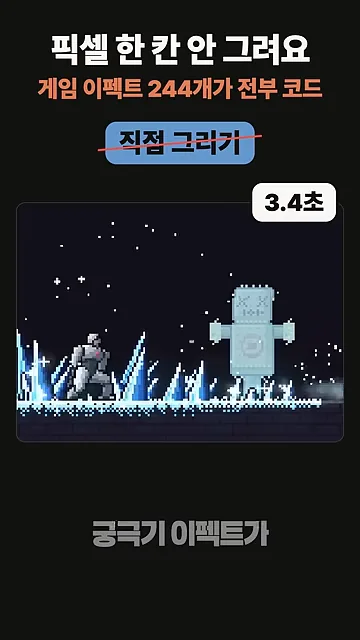
이 이펙트에 들어간 이미지는 0장이에요. 왼쪽 이미지 아이콘에는 줄이 그어져 있고, 오른쪽에는 src/fx/ice/frost-nova.js라는 코드 파일 하나만 남아 있어요. 이펙트 하나가 곧 JS(JavaScript) 파일 하나라는 뜻이에요.
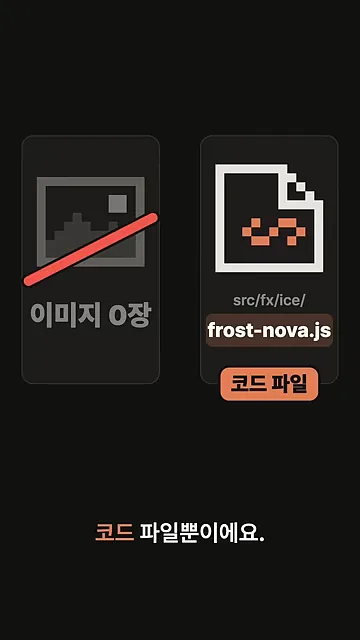
이걸 만든 게 pixelfx예요. 카드 위쪽에는 불타는 해골, 폭포 같은 이펙트 썸네일이 있고, 아래에 'Plus a Claude Code skill'과 '무료' 표시가 있어요. 이펙트 모음에 Claude Code 스킬이 함께 딸려 오는 구성이에요.
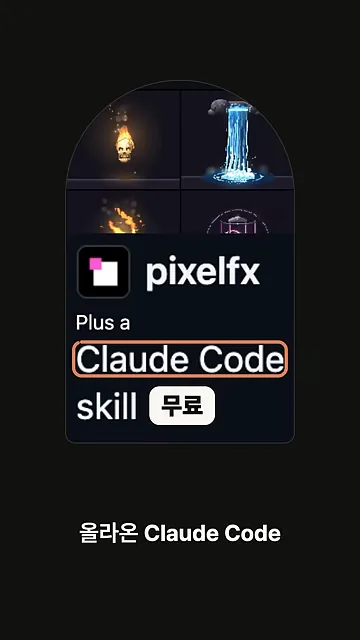
반응도 빨랐어요. 왼쪽 카드는 2026년 10월 30일 공개, 오른쪽은 11월 4일 기준 GitHub 별 4,020개예요. 공개 닷새 만에 별 4천 개를 넘긴 셈이에요.
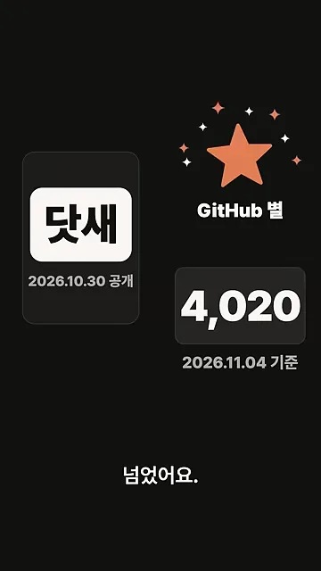
초안, 렌더, 보기, 고치기
AI(Artificial Intelligence)에게 이펙트를 한 번에 뽑아 달라고 하면 그저 그런 결과가 나온다는 게 영상의 출발점이에요. 이 스킬은 코드를 찰흙처럼 다뤄요. 아래 화면의 frost-nova.js 맨 위에는 이름(Frost nova), 태그(ice, nova, aoe, frost), 길이 3.4초, 반복하지 않음(loop: false) 같은 정보가 적혀 있어요. 그 아래 그리는 코드를 주물러 가며 모양을 잡아요.
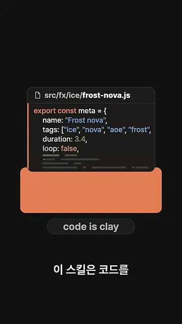
실제 작업 화면을 보면 순서가 드러나요. 맨 위 node tools/render.mjs arcane/frost-sigil에 '초안'과 '렌더' 표시가 붙어 있어요. 이 명령이 프레임 91장을 렌더해 컨택트 시트 한 장(contact.png)으로 모아요. 가운데 줄에서 Claude가 그 이미지를 직접 읽는데, 여기에 '보기' 표시가 있어요. 맨 아래 흐린 줄은 sed로 숫자 몇 개를 고친 뒤 다시 렌더하는 단계예요.
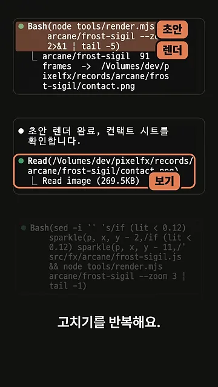
화면은 로그를 위에서 아래로 보여 주지만, 실제로는 한 바퀴 돌고 다시 처음으로 가는 구조예요. 네 단계를 원으로 그리면 이래요.
244개를 고쳐 쓰고 새로 만들기
들어 있는 244개를 고쳐 쓰기
저장소에는 이펙트 244개가 이미 들어 있어요. 화면의 네 칸이 그 예시예요. 왼쪽 위부터 불, 폭발, 얼음, 번개예요.
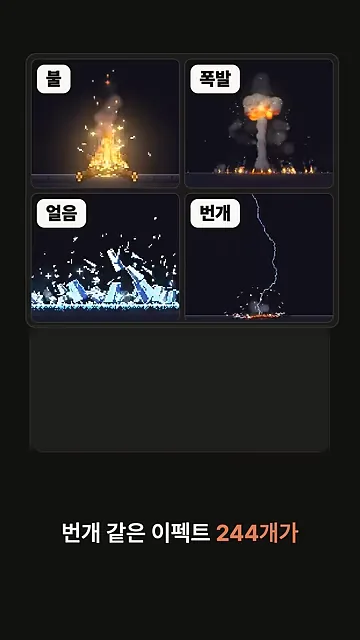
모양을 바꾸지 않고 색만 바꿀 수도 있어요. 화면 아래 칸들이 색 목록, 곧 팔레트예요. 빨강~노랑이던 칸을 남색~하늘색으로 바꾸자 '파란 횃불' 배지가 붙은 횃불이 나왔어요.
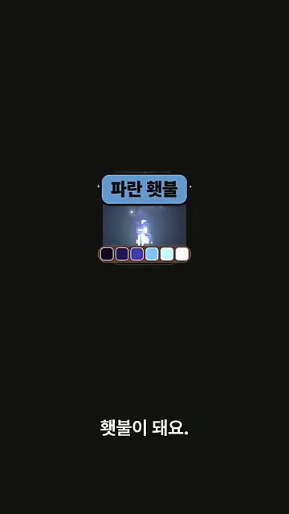
서리 폭발을 부탁하면 이펙트만 터지지 않아요. 캐릭터가 팔을 들어 올리고, 바닥에 얼음 고리가 퍼지고, 마지막에 적이 통째로 얼어요. 아래 화면에서 동그라미 친 허수아비가 '통째로 얼음' 상태예요.
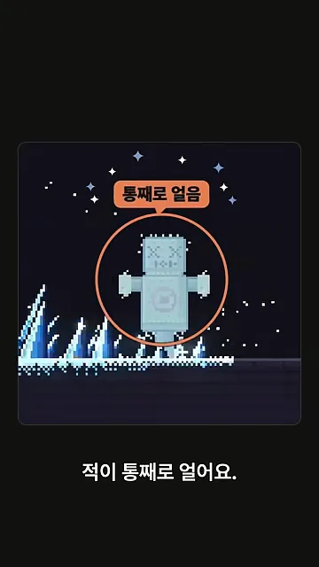
목록에 없는 이펙트 새로 만들기
244개에 없는 것도 만들 수 있어요. 위쪽 주문은 'pixelfx 스킬로 목록에 없는 새 이펙트를 만들어 줘: arcane/frost-sigil, 서리 마법진'이에요. 가운데 숫자 4는 네 번 고쳤다는 뜻이에요. 그 아래 검사 결과는 '1 effects: 1 pass, 0 fail, 0 with warnings'로 통과했고, 맨 아래가 완성된 새 이펙트예요.
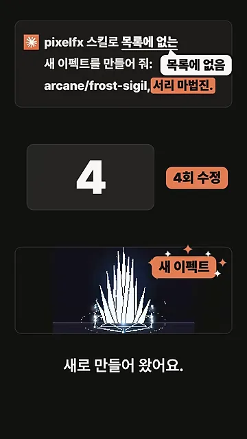
게임 엔진으로 내보내기
결과는 스프라이트 시트로 바로 뽑아요. 화면 맨 위 격자가 서리 폭발의 프레임을 한 장에 늘어놓은 시트이고, 가운데에 Godot와 Unity가 적혀 있어요. 맨 아래 명령 node tools/render.mjs ice/frost-nova --sheet 한 줄이면 돼요.
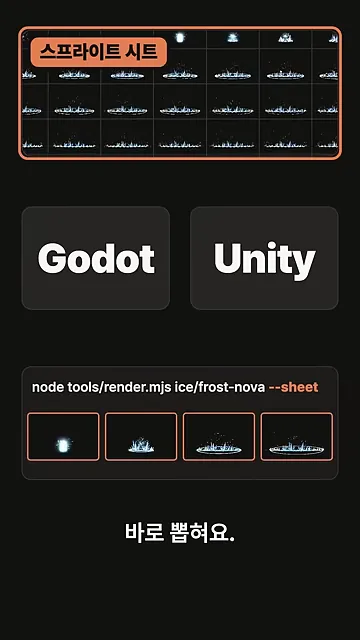
지금까지 본 세 가지 쓰임을 정리하면 이래요.
| 하고 싶은 일 | 영상에서 한 방법 | 결과 |
|---|---|---|
| 있는 이펙트 색 바꾸기 | 색 목록만 교체 | 빨간 횃불 → 파란 횃불 |
| 목록에 없는 이펙트 | 말로 주문, 스킬이 4회 수정 | arcane/frost-sigil(서리 마법진) |
| 게임 엔진에 넣기 | render.mjs … --sheet | Godot·Unity용 스프라이트 시트 |
영상은 만들고 있는 게임 하나를 골라 필살기를 말로 주문해 보라며 끝나요. 설치는 명령어 두 줄이라고만 하고, 방법은 고정 댓글로 넘겨요.